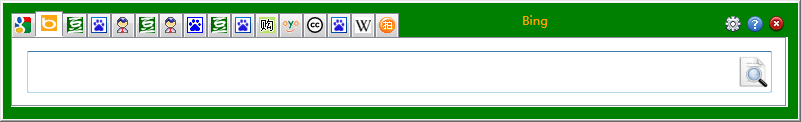
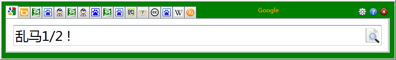
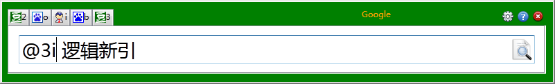
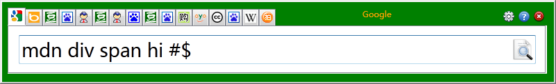
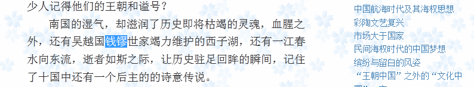
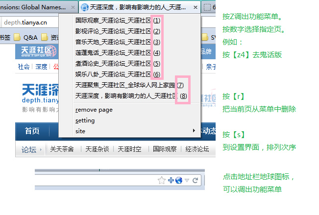
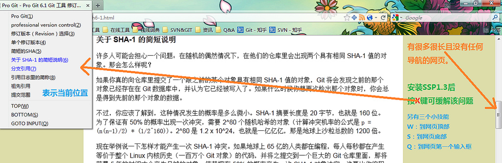
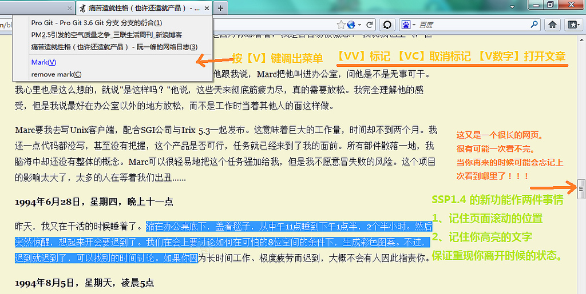
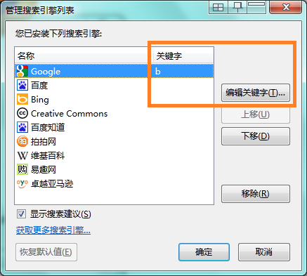

Ctrl Ctrl 0.9.6
Ctrl Ctrl 是什么？
单键导向的大杂烩扩展。涵盖检索增强、操作定制、浏览管理等功能。
独立检索窗口
快速按两下Ctrl，可调出一个独立的检索窗口。
在网页或者输入框选择文字，按两下Ctrl，该文字会被传递给检索窗口
站内检索
检索内容 + 空格 + ! 可以利用搜索引擎的site参数对当前网站进行站内检索
多重检索
输入@后，检索窗口会列出有别名的搜索引擎。选择想使用的别名后加上空格区隔检索内容。图例：使用豆瓣读书和新浪共享两个引擎检索“逻辑新引”
分别检索
图例：使用百度引擎 分别检索firefox，chrome，ie三个关键词

组合检索
图例：使用默认的谷歌引擎 分别检索"mdn firefox"，"mdn chrome"，"mdn ie" 三个关键词
单键检索
选择文字，按下搜索引擎的别名进行检索
它以域名为单位（通常情况是网站），收集、管理、跳转到指定的页面。
页面目录
读取网页中的标题作为导航目标。
页面标记
标记页面，保存网页的位置和高亮选择的文字。下次打开时重现。
版本升级说明
0.9.6 将SSP的全部功能整合进Ctrl Ctrl
设置搜索引擎别名
方法1：点击【浏览器搜索框图标】->点击【管理搜索引擎...]
方法2：Ctrl Ctrl调用检索窗口->点击设置按钮。
SSP数据迁移
如果想把原先SSP的数据转移到Ctrl Ctrl下继续使用，按以下两步作：
1、进入about:config
2、将extensions.sspage.mapping、extensions.sspage.lastedmarks的内容复制到extensions.handysearch.mapping、extensions.handysearch.lastedmarks